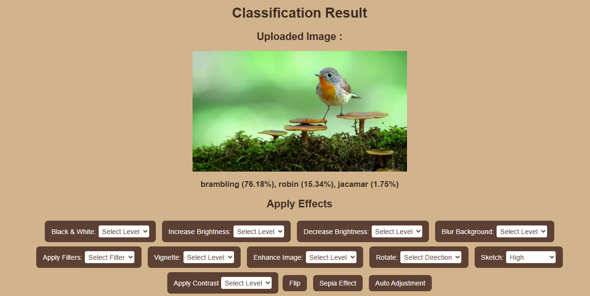
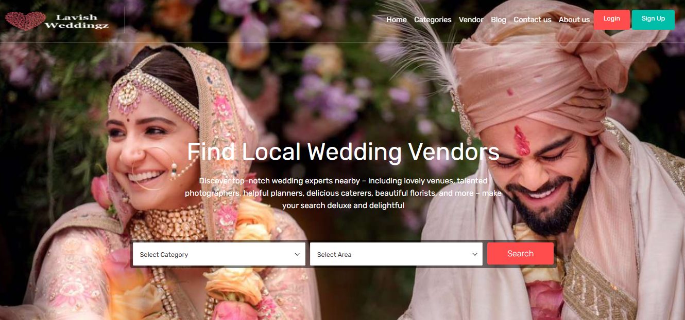
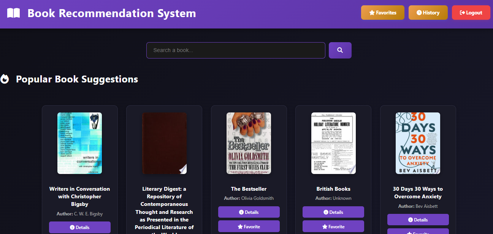

Python, Flask, OpenCV, TensorFlow, HTML, CSS, Jinja2
Web-based image recognition system using a pre-trained ResNet50 CNN with transfer learning. Users upload images and receive real-time classification results.
View on GitHubPython, Flask, Pandas, HTML, CSS
Recipe recommendation application using BFS algorithm to suggest recipes based on selected ingredients and dietary preferences.
View on GitHub
PHP, MySQL, Bootstrap, HTML, CSS, JavaScript
Full-stack wedding vendor management system with vendor booking, dashboards, and reporting features.
View on GitHub
Python, Flask, HTML, CSS, Jinja2, MySQL
This project is a web-based Book Recommendation System developed using Python (Flask) and MySQL. It provides role-based access where users can explore books, manage favorites, and view history, while admins handle book management, user control, reviews, and analytics.
View on GitHub